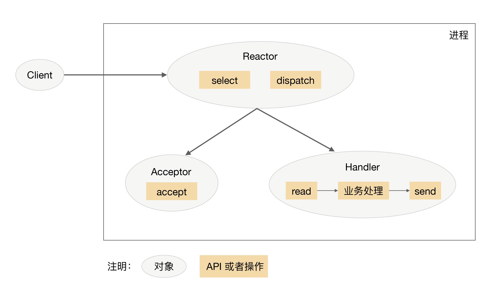
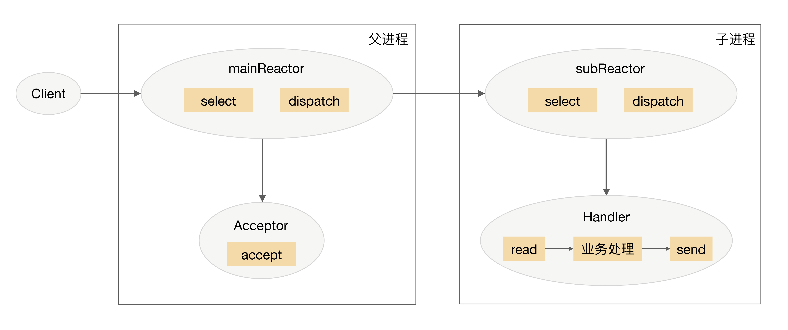

- 00 开篇词 照着做，你也能成为架构师！.md.html
- 01 架构到底是指什么？.md.html
- 02 架构设计的历史背景.md.html
- 03 架构设计的目的.md.html
- 04 复杂度来源：高性能.md.html
- 05 复杂度来源：高可用.md.html
- 06 复杂度来源：可扩展性.md.html
- 07 复杂度来源：低成本、安全、规模.md.html
- 08 架构设计三原则.md.html
- 09 架构设计原则案例.md.html
- 10 架构设计流程：识别复杂度.md.html
- 11 架构设计流程：设计备选方案.md.html
- 12 架构设计流程：评估和选择备选方案.md.html
- 13 架构设计流程：详细方案设计.md.html
- 14 高性能数据库集群：读写分离.md.html
- 15 高性能数据库集群：分库分表.md.html
- 16 高性能NoSQL.md.html
- 17 高性能缓存架构.md.html
- 18 单服务器高性能模式：PPC与TPC.md.html
- 19 单服务器高性能模式：Reactor与Proactor.md.html
- 20 高性能负载均衡：分类及架构.md.html
- 21 高性能负载均衡：算法.md.html
- 22 想成为架构师，你必须知道CAP理论.md.html
- 23 想成为架构师，你必须掌握的CAP细节.md.html
- 24 FMEA方法，排除架构可用性隐患的利器.md.html
- 25 高可用存储架构：双机架构.md.html
- 26 高可用存储架构：集群和分区.md.html
- 27 如何设计计算高可用架构？.md.html
- 28 业务高可用的保障：异地多活架构.md.html
- 29 异地多活设计4大技巧.md.html
- 30 异地多活设计4步走.md.html
- 31 如何应对接口级的故障？.md.html
- 32 可扩展架构的基本思想和模式.md.html
- 33 传统的可扩展架构模式：分层架构和SOA.md.html
- 34 深入理解微服务架构：银弹 or 焦油坑？.md.html
- 35 微服务架构最佳实践 - 方法篇.md.html
- 36 微服务架构最佳实践 - 基础设施篇.md.html
- 37 微内核架构详解.md.html
- 38 架构师应该如何判断技术演进的方向？.md.html
- 39 互联网技术演进的模式.md.html
- 40 互联网架构模板：存储层技术.md.html
- 41 互联网架构模板：开发层和服务层技术.md.html
- 42 互联网架构模板：网络层技术.md.html
- 43 互联网架构模板：用户层和业务层技术.md.html
- 44 互联网架构模板：平台技术.md.html
- 45 架构重构内功心法第一式：有的放矢.md.html
- 46 架构重构内功心法第二式：合纵连横.md.html
- 47 架构重构内功心法第三式：运筹帷幄.md.html
- 48 再谈开源项目：如何选择、使用以及二次开发？.md.html
- 49 谈谈App架构的演进.md.html
- 50 架构实战：架构设计文档模板.md.html
- 51 如何画出优秀的软件系统架构图？.md.html
- 加餐｜业务架构实战营开营了.md.html
- 加餐｜单服务器高性能模式性能对比.md.html
- 加餐｜扒一扒中台皇帝的外衣.md.html
- 如何高效地学习开源项目 华仔，放学别走！ 第3期.md.html
- 新书首发 《从零开始学架构》.md.html
- 架构专栏特别放送 华仔，放学别走！ 第2期.md.html
- 架构专栏特别放送 华仔，放学别走！第1期.md.html
- 架构师必读书单 华仔，放学别走！ 第5期.md.html
- 架构师成长之路 华仔，放学别走！ 第4期.md.html
- 结束语 坚持，成就你的技术梦想.md.html
- 捐赠
19 单服务器高性能模式：Reactor与Proactor
专栏上一期我介绍了单服务器高性能的PPC和TPC模式，它们的优点是实现简单，缺点是都无法支撑高并发的场景，尤其是互联网发展到现在，各种海量用户业务的出现，PPC和TPC完全无能为力。今天我将介绍可以应对高并发场景的单服务器高性能架构模式：Reactor和Proactor。
Reactor
PPC模式最主要的问题就是每个连接都要创建进程（为了描述简洁，这里只以PPC和进程为例，实际上换成TPC和线程，原理是一样的），连接结束后进程就销毁了，这样做其实是很大的浪费。为了解决这个问题，一个自然而然的想法就是资源复用，即不再单独为每个连接创建进程，而是创建一个进程池，将连接分配给进程，一个进程可以处理多个连接的业务。
引入资源池的处理方式后，会引出一个新的问题：进程如何才能高效地处理多个连接的业务？当一个连接一个进程时，进程可以采用“read -> 业务处理 -> write”的处理流程，如果当前连接没有数据可以读，则进程就阻塞在read操作上。这种阻塞的方式在一个连接一个进程的场景下没有问题，但如果一个进程处理多个连接，进程阻塞在某个连接的read操作上，此时即使其他连接有数据可读，进程也无法去处理，很显然这样是无法做到高性能的。
解决这个问题的最简单的方式是将read操作改为非阻塞，然后进程不断地轮询多个连接。这种方式能够解决阻塞的问题，但解决的方式并不优雅。首先，轮询是要消耗CPU的；其次，如果一个进程处理几千上万的连接，则轮询的效率是很低的。
为了能够更好地解决上述问题，很容易可以想到，只有当连接上有数据的时候进程才去处理，这就是I/O多路复用技术的来源。
I/O多路复用技术归纳起来有两个关键实现点：
- 当多条连接共用一个阻塞对象后，进程只需要在一个阻塞对象上等待，而无须再轮询所有连接，常见的实现方式有select、epoll、kqueue等。
- 当某条连接有新的数据可以处理时，操作系统会通知进程，进程从阻塞状态返回，开始进行业务处理。
I/O多路复用结合线程池，完美地解决了PPC和TPC的问题，而且“大神们”给它取了一个很牛的名字：Reactor，中文是“反应堆”。联想到“核反应堆”，听起来就很吓人，实际上这里的“反应”不是聚变、裂变反应的意思，而是“事件反应”的意思，可以通俗地理解为“来了一个事件我就有相应的反应”，这里的“我”就是Reactor，具体的反应就是我们写的代码，Reactor会根据事件类型来调用相应的代码进行处理。Reactor模式也叫Dispatcher模式（在很多开源的系统里面会看到这个名称的类，其实就是实现Reactor模式的），更加贴近模式本身的含义，即I/O多路复用统一监听事件，收到事件后分配（Dispatch）给某个进程。
Reactor模式的核心组成部分包括Reactor和处理资源池（进程池或线程池），其中Reactor负责监听和分配事件，处理资源池负责处理事件。初看Reactor的实现是比较简单的，但实际上结合不同的业务场景，Reactor模式的具体实现方案灵活多变，主要体现在：
- Reactor的数量可以变化：可以是一个Reactor，也可以是多个Reactor。
- 资源池的数量可以变化：以进程为例，可以是单个进程，也可以是多个进程（线程类似）。
将上面两个因素排列组合一下，理论上可以有4种选择，但由于“多Reactor单进程”实现方案相比“单Reactor单进程”方案，既复杂又没有性能优势，因此“多Reactor单进程”方案仅仅是一个理论上的方案，实际没有应用。
最终Reactor模式有这三种典型的实现方案：
- 单Reactor单进程/线程。
- 单Reactor多线程。
- 多Reactor多进程/线程。
以上方案具体选择进程还是线程，更多地是和编程语言及平台相关。例如，Java语言一般使用线程（例如，Netty），C语言使用进程和线程都可以。例如，Nginx使用进程，Memcache使用线程。
1.单Reactor单进程/线程
单Reactor单进程/线程的方案示意图如下（以进程为例）：

注意，select、accept、read、send是标准的网络编程API，dispatch和“业务处理”是需要完成的操作，其他方案示意图类似。
详细说明一下这个方案：
- Reactor对象通过select监控连接事件，收到事件后通过dispatch进行分发。
- 如果是连接建立的事件，则由Acceptor处理，Acceptor通过accept接受连接，并创建一个Handler来处理连接后续的各种事件。
- 如果不是连接建立事件，则Reactor会调用连接对应的Handler（第2步中创建的Handler）来进行响应。
- Handler会完成read->业务处理->send的完整业务流程。
单Reactor单进程的模式优点就是很简单，没有进程间通信，没有进程竞争，全部都在同一个进程内完成。但其缺点也是非常明显，具体表现有：
- 只有一个进程，无法发挥多核CPU的性能；只能采取部署多个系统来利用多核CPU，但这样会带来运维复杂度，本来只要维护一个系统，用这种方式需要在一台机器上维护多套系统。
- Handler在处理某个连接上的业务时，整个进程无法处理其他连接的事件，很容易导致性能瓶颈。
因此，单Reactor单进程的方案在实践中应用场景不多，只适用于业务处理非常快速的场景，目前比较著名的开源软件中使用单Reactor单进程的是Redis。
需要注意的是，C语言编写系统的一般使用单Reactor单进程，因为没有必要在进程中再创建线程；而Java语言编写的一般使用单Reactor单线程，因为Java虚拟机是一个进程，虚拟机中有很多线程，业务线程只是其中的一个线程而已。
2.单Reactor多线程
为了克服单Reactor单进程/线程方案的缺点，引入多进程/多线程是显而易见的，这就产生了第2个方案：单Reactor多线程。
单Reactor多线程方案示意图是：

我来介绍一下这个方案：
- 主线程中，Reactor对象通过select监控连接事件，收到事件后通过dispatch进行分发。
- 如果是连接建立的事件，则由Acceptor处理，Acceptor通过accept接受连接，并创建一个Handler来处理连接后续的各种事件。
- 如果不是连接建立事件，则Reactor会调用连接对应的Handler（第2步中创建的Handler）来进行响应。
- Handler只负责响应事件，不进行业务处理；Handler通过read读取到数据后，会发给Processor进行业务处理。
- Processor会在独立的子线程中完成真正的业务处理，然后将响应结果发给主进程的Handler处理；Handler收到响应后通过send将响应结果返回给client。
单Reator多线程方案能够充分利用多核多CPU的处理能力，但同时也存在下面的问题：
- 多线程数据共享和访问比较复杂。例如，子线程完成业务处理后，要把结果传递给主线程的Reactor进行发送，这里涉及共享数据的互斥和保护机制。以Java的NIO为例，Selector是线程安全的，但是通过Selector.selectKeys()返回的键的集合是非线程安全的，对selected keys的处理必须单线程处理或者采取同步措施进行保护。
- Reactor承担所有事件的监听和响应，只在主线程中运行，瞬间高并发时会成为性能瓶颈。
你可能会发现，我只列出了“单Reactor多线程”方案，没有列出“单Reactor多进程”方案，这是什么原因呢？主要原因在于如果采用多进程，子进程完成业务处理后，将结果返回给父进程，并通知父进程发送给哪个client，这是很麻烦的事情。因为父进程只是通过Reactor监听各个连接上的事件然后进行分配，子进程与父进程通信时并不是一个连接。如果要将父进程和子进程之间的通信模拟为一个连接，并加入Reactor进行监听，则是比较复杂的。而采用多线程时，因为多线程是共享数据的，因此线程间通信是非常方便的。虽然要额外考虑线程间共享数据时的同步问题，但这个复杂度比进程间通信的复杂度要低很多。
3.多Reactor多进程/线程
为了解决单Reactor多线程的问题，最直观的方法就是将单Reactor改为多Reactor，这就产生了第3个方案：多Reactor多进程/线程。
多Reactor多进程/线程方案示意图是（以进程为例）：

方案详细说明如下：
- 父进程中mainReactor对象通过select监控连接建立事件，收到事件后通过Acceptor接收，将新的连接分配给某个子进程。
- 子进程的subReactor将mainReactor分配的连接加入连接队列进行监听，并创建一个Handler用于处理连接的各种事件。
- 当有新的事件发生时，subReactor会调用连接对应的Handler（即第2步中创建的Handler）来进行响应。
- Handler完成read→业务处理→send的完整业务流程。
多Reactor多进程/线程的方案看起来比单Reactor多线程要复杂，但实际实现时反而更加简单，主要原因是：
- 父进程和子进程的职责非常明确，父进程只负责接收新连接，子进程负责完成后续的业务处理。
- 父进程和子进程的交互很简单，父进程只需要把新连接传给子进程，子进程无须返回数据。
- 子进程之间是互相独立的，无须同步共享之类的处理（这里仅限于网络模型相关的select、read、send等无须同步共享，“业务处理”还是有可能需要同步共享的）。
目前著名的开源系统Nginx采用的是多Reactor多进程，采用多Reactor多线程的实现有Memcache和Netty。
我多说一句，Nginx采用的是多Reactor多进程的模式，但方案与标准的多Reactor多进程有差异。具体差异表现为主进程中仅仅创建了监听端口，并没有创建mainReactor来“accept”连接，而是由子进程的Reactor来“accept”连接，通过锁来控制一次只有一个子进程进行“accept”，子进程“accept”新连接后就放到自己的Reactor进行处理，不会再分配给其他子进程，更多细节请查阅相关资料或阅读Nginx源码。
Proactor
Reactor是非阻塞同步网络模型，因为真正的read和send操作都需要用户进程同步操作。这里的“同步”指用户进程在执行read和send这类I/O操作的时候是同步的，如果把I/O操作改为异步就能够进一步提升性能，这就是异步网络模型Proactor。
Proactor中文翻译为“前摄器”比较难理解，与其类似的单词是proactive，含义为“主动的”，因此我们照猫画虎翻译为“主动器”反而更好理解。Reactor可以理解为“来了事件我通知你，你来处理”，而Proactor可以理解为“来了事件我来处理，处理完了我通知你”。这里的“我”就是操作系统内核，“事件”就是有新连接、有数据可读、有数据可写的这些I/O事件，“你”就是我们的程序代码。
Proactor模型示意图是：

详细介绍一下Proactor方案：
- Proactor Initiator负责创建Proactor和Handler，并将Proactor和Handler都通过Asynchronous Operation Processor注册到内核。
- Asynchronous Operation Processor负责处理注册请求，并完成I/O操作。
- Asynchronous Operation Processor完成I/O操作后通知Proactor。
- Proactor根据不同的事件类型回调不同的Handler进行业务处理。
- Handler完成业务处理，Handler也可以注册新的Handler到内核进程。
理论上Proactor比Reactor效率要高一些，异步I/O能够充分利用DMA特性，让I/O操作与计算重叠，但要实现真正的异步I/O，操作系统需要做大量的工作。目前Windows下通过IOCP实现了真正的异步I/O，而在Linux系统下的AIO并不完善，因此在Linux下实现高并发网络编程时都是以Reactor模式为主。所以即使Boost.Asio号称实现了Proactor模型，其实它在Windows下采用IOCP，而在Linux下是用Reactor模式（采用epoll）模拟出来的异步模型。
小结
今天我为你讲了单服务器支持高并发的高性能架构模式Reactor和Proactor，希望对你有所帮助。
这就是今天的全部内容，留一道思考题给你吧，针对“前浪微博”消息队列架构的案例，你觉得采用何种并发模式是比较合适的，为什么？
© 2019 - 2023 Liangliang Lee. Powered by gin and hexo-theme-book.